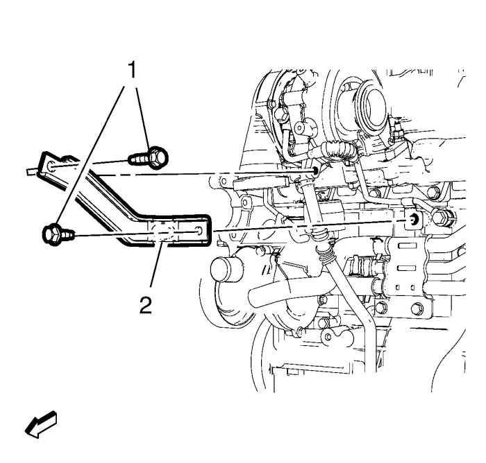
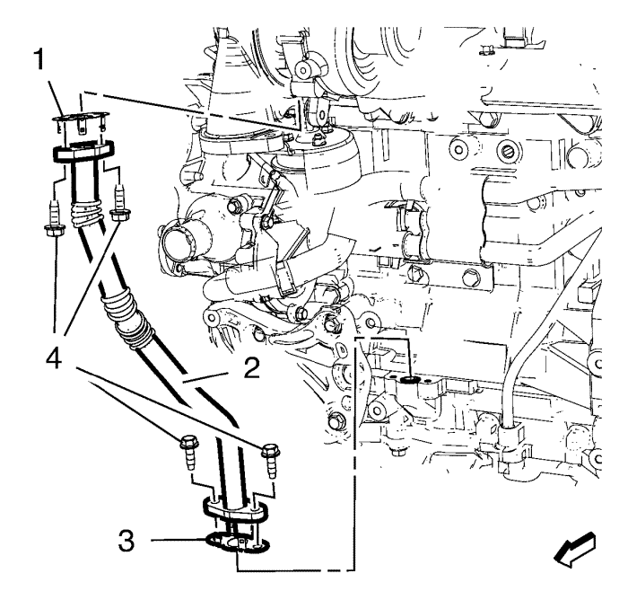

Orlando
Sustitución del tubo de retorno de aceite de turbocompresor
Procedimiento de desmontaje
Extraiga el cable negativo de la batería. Consultar
Desconexión y conexión del cable negativo de la batería
.
Desmontar la pantalla de protección del motor. Consultar
Sustitución del protector del motor
.
Retire el tubo flexible de entrada del refrigerador de aire de carga
Sustitución del tubo flexible de entrada del intercooler
.
Desmonte el filtro de partículas de escape. Consultar
Desmontaje del filtro de partículas de escape
.

Retire los dos tornillos del soporte del turbocompresor (1).
Retire el soporte del turbocompresor (2).

Retire los 4 pernos (4) del tubo de retorno de aceite del turbocompresor.
Retire el tubo de retorno del aceite del turbocompresor (2) y las 2 juntas del tubo de retorno de aceite del turbocompresor (1, 3).
Procedimiento de montaje
Monte el tubo de retorno de aceite del turbocompresor (2) y las 2 juntas NUEVAS (1, 3).
Precaución:
Consulte
Precaución con las fijaciones
en la sección Prólogo.
Monte los 4 tornillos del tubo de retorno de aceite del turbocompresor (4) y apriételos a
10 N·m (89 lib. pulg.)
.
Instale el soporte del turbocompresor (2).
Monte los 2 tornillos (1) en el soporte del turbocompresor (2) y apriételos a
25 N·m (18 lib. pie)
.
Monte el filtro de partículas de escape. Consultar
Montaje del filtro de partículas del escape
.
Monte el tubo flexible del refrigerador de aire de carga. Consultar
Sustitución del tubo flexible de entrada del intercooler
.
Monte el protector del motor. Consultar
Sustitución del protector del motor
.
Monte el cable negativo de la batería. Consultar
Desconexión y conexión del cable negativo de la batería
.
© Copyright Chevrolet. All rights reserved